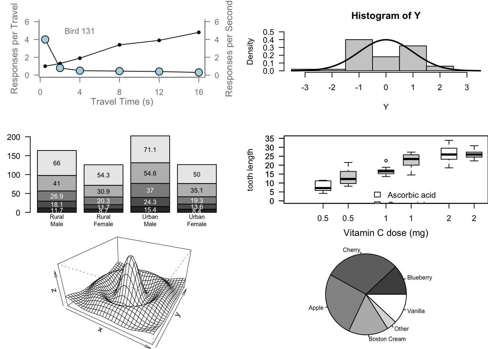

## Start plotting from basics
# Note the order
plot(pressure, pch=23) # Can you change pch?
text(150, 600,
"Pressure (mm Hg)\nversus\nTemperature (Celsius)")Assignment 2
Paul Murrell’s R examples
Pch can be changed. Pch modifies the plot symbol that will be plotted in R functions to different shapes like solid or empty circles or triangles.
# Examples of standard high-level plots
# In each case, extra output is also added using low-level
# plotting functions.
# Setting the parameter (3 rows by 2 cols)
par(mfrow=c(3, 2))
# Scatterplot
# Note the incremental additions
x <- c(0.5, 2, 4, 8, 12, 16)
y1 <- c(1, 1.3, 1.9, 3.4, 3.9, 4.8)
y2 <- c(4, .8, .5, .45, .4, .3)
# Setting label orientation, margins c(bottom, left, top, right) & text size
par(las=1, mar=c(4, 4, 2, 4), cex=.7)
plot.new()
plot.window(range(x), c(0, 6))
lines(x, y1)
lines(x, y2)
points(x, y1, pch=16, cex=1) # Try different cex value?
points(x, y2, pch=21, bg="lightblue", cex=2) # Different background color
par(col="gray50", fg="gray50", col.axis="gray50")
axis(1, at=seq(0, 16, 4)) # What is the first number standing for?
axis(2, at=seq(0, 6, 2))
axis(4, at=seq(0, 6, 2))
box(bty="u")
mtext("Travel Time (s)", side=1, line=2, cex=0.8)
mtext("Responses per Travel", side=2, line=2, las=0, cex=0.8)
mtext("Responses per Second", side=4, line=2, las=0, cex=0.8)
text(4, 5, "Bird 131")
par(mar=c(5.1, 4.1, 4.1, 2.1), col="black", fg="black", col.axis="black")
# Histogram
# Random data
Y <- rnorm(50)
# Make sure no Y exceed [-3.5, 3.5]
Y[Y < -3.5 | Y > 3.5] <- NA # Selection/set range
x <- seq(-3.5, 3.5, .1)
dn <- dnorm(x)
par(mar=c(4.5, 4.1, 3.1, 0))
hist(Y, breaks=seq(-3.5, 3.5), ylim=c(0, 0.5),
col="gray80", freq=FALSE)
lines(x, dnorm(x), lwd=2)
par(mar=c(5.1, 4.1, 4.1, 2.1))
# Barplot
par(mar=c(2, 3.1, 2, 2.1))
midpts <- barplot(VADeaths,
col=gray(0.1 + seq(1, 9, 2)/11),
names=rep("", 4))
mtext(sub(" ", "\n", colnames(VADeaths)),
at=midpts, side=1, line=0.5, cex=0.5)
text(rep(midpts, each=5), apply(VADeaths, 2, cumsum) - VADeaths/2,
VADeaths,
col=rep(c("white", "black"), times=3:2),
cex=0.8)
par(mar=c(5.1, 4.1, 4.1, 2.1))
# Boxplot
par(mar=c(3, 4.1, 2, 0))
boxplot(len ~ dose, data = ToothGrowth,
boxwex = 0.25, at = 1:3 - 0.2,
subset= supp == "VC", col="white",
xlab="",
ylab="tooth length", ylim=c(0,35))
mtext("Vitamin C dose (mg)", side=1, line=2.5, cex=0.8)
boxplot(len ~ dose, data = ToothGrowth, add = TRUE,
boxwex = 0.25, at = 1:3 + 0.2,
subset= supp == "OJ")
legend(1.5, 9, c("Ascorbic acid", "Orange juice"),
fill = c("white", "gray"),
bty="n")
par(mar=c(5.1, 4.1, 4.1, 2.1))
# Persp
x <- seq(-10, 10, length= 30)
y <- x
f <- function(x,y) { r <- sqrt(x^2+y^2); 10 * sin(r)/r }
z <- outer(x, y, f)
z[is.na(z)] <- 1
# 0.5 to include z axis label
par(mar=c(0, 0.5, 0, 0), lwd=0.5)
persp(x, y, z, theta = 30, phi = 30,
expand = 0.5)
par(mar=c(5.1, 4.1, 4.1, 2.1), lwd=1)
# Piechart
par(mar=c(0, 2, 1, 2), xpd=FALSE, cex=0.5)
pie.sales <- c(0.12, 0.3, 0.26, 0.16, 0.04, 0.12)
names(pie.sales) <- c("Blueberry", "Cherry",
"Apple", "Boston Cream", "Other", "Vanilla")
pie(pie.sales, col = gray(seq(0.3,1.0,length=6))) 
# Exercise: Can you generate these charts individually? Try these functions
# using another dataset. Be sure to work on the layout and marginsThe cex value changes the size of the plots on the plotline. I changed it to 1, so the size of the plot shows up smaller in the visual. The axis() function is used to add an axis to a chart. The 1 indicates side = 1, which is the x-axis. If side = 2 was selected then it would be the y-axis.
Exercise using the Happy Planet Data Set
library(openxlsx)
hpi_data <- read.xlsx(
"https://github.com/rishi-kat/EPPS6356_DataVis/raw/main/happy-planet-index-data.xlsx",
sheet = "1. All countries",
startRow = 8)
# continents <- c("Latin America", "N. America & Oceania", "Western Europe", "Middle East", "Africa", "South Asia",
# "Eastern Europe & Central Asia", "East Asia")
boxplot(`Life.Expectancy.(years)` ~ Continent, data = hpi_data,
boxwex = .5, cex = 1.5, ylab = "Happy Planet Index")Boxplot Legend for x-axis (Continent): (1) Latin America, (2) N. America & Oceania, (3) Western Europe, (4) Middle East, (5) Africa, (6) South Asia, (7) Eastern Europe & Central Asia, (8) East Asia